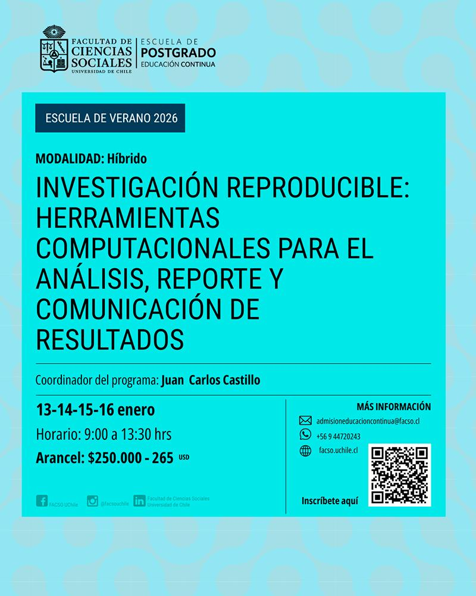
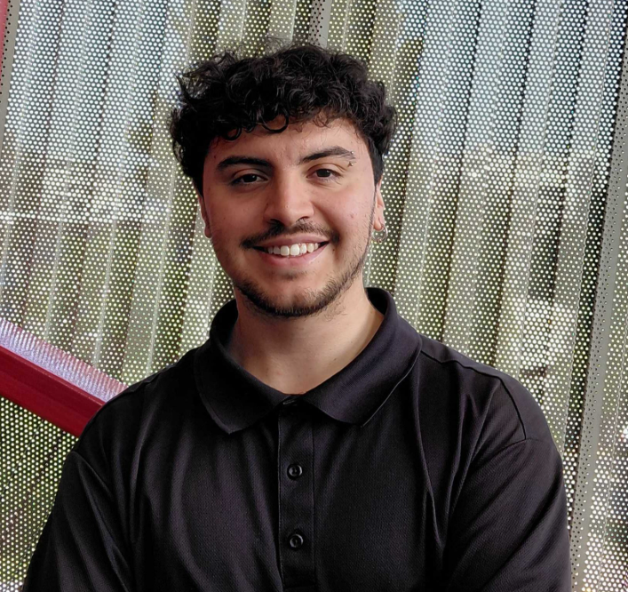

Investigación reproducible: Herramientas computacionales para el análisis, reporte y comunicación de resultados
Escuela de Verano Educación Continua FACSO 2026

El Departamento de Sociología de la Facultad de Ciencias Sociales de la Universidad de Chile invita a participar en el curso de especialización “Investigación reproducible: Herramientas computacionales para el análisis, reporte y comunicación de resultados”, parte de la Escuela de Verano 2026 de Educación Continua.
Público objetivo
El curso está dirigido a profesionales, académicos, estudiantes, funcionariado público y trabajadores que necesiten fortalecer sus habilidades en análisis, reporte y presentación de datos para mejorar la calidad, transparencia y trazabilidad de sus proyectos. Se orienta especialmente a quienes desarrollan investigación social, análisis de datos, evaluación de políticas públicas, estudios de mercado o proyectos relacionados con ciencias sociales, salud, educación y áreas afines. No se requieren conocimientos previos en programación, pero si es recomendable tener experiencia básica en análisis de datos con programas basados en código (R, Python, Stata, etc.).
Contenidos principales
Visual Studio Code (VSC)
VSC es un editor ampliamente utilizado en los últimos años y que sirve para escribir texto y código, y analizar datos en distintos lenguajes. Se revisan sus principales funcionalidades, extensiones y atajos de teclado para optimizar el flujo de trabajo en proyectos de análisis de datos e investigación reproducible.Documentos dinámicos con Markdown y Quarto
Introducción a Markdown como lenguaje de marcado sencillo para escribir texto estructurado (títulos, listas, énfasis) y combinarlo con código. A partir de esto, se trabaja con Quarto para crear documentos dinámicos como informes, reportes y presentaciones que se actualizan automáticamente cuando cambian los datos o el código, facilitando la coherencia entre análisis y resultados.Control de versiones y publicación con Git/GitHub
Revisión de los conceptos básicos de Git como sistema de control de versiones: guardar el historial de cambios, recuperar versiones anteriores y trabajar en paralelo en un mismo proyecto. Se explica el uso de GitHub como repositorio remoto para respaldar el trabajo, colaborar con otras personas y publicar productos reproducibles (informes, sitios web, materiales docentes) en plataformas abiertas.
Información general
- Fechas: martes 13, miércoles 14, jueves 15 y viernes 16 de enero de 2026
- Horario: 09:00 a 13:30 horas
- Modalidad: Híbrida (clases por Zoom y en aula física)
- Organiza: Departamento de Sociología, FACSO – Universidad de Chile
- Valor de referencia: $250.000 CLP (aprox. 265 USD)
El curso contempla clases teórico–participativas, discusión de experiencias y trabajo aplicado sobre repositorios reales, buscando que cada participante pueda adaptar las herramientas a sus contextos de investigación y docencia. Al finalizar, quienes aprueben obtendrán certificación como Curso de Especialización de la Universidad de Chile.
Equipo

Juan Carlos Castillo
Investigador Principal LISA
|
Profesor titular del Departamento de Sociología de la Universidad de Chile, investigador principal del Núcleo Milenio en Desigualdades y Oportunidades Digitales (NUDOS), y del Centro de Estudios de Conflicto y Cohesión Social (COES), donde es investigador principal del Laboratorio de Investigación Social Abierta - LISA. Obtuvo su doctorado en Sociología en la Humboldt Universität zu Berlin. |

Kevin Carrasco
Coordinador LISA
|
Sociólogo y magíster en Ciencias Sociales de la Universidad de Chile. Actualmente, se desempeña como coordinador del Laboratorio de Investigación Social Abierta (LISA-COES), asistente de investigación de la línea “Interacciones grupales e individuales” de COES y como profesor de la cátedra “Métodos Estadísticos para las Ciencias Sociales III” de la Universidad Andrés Bello. Sus intereses de investigación incluyen desigualdad, justicia distributiva, ciencia abierta y métodos cuantitativos de investigación social. |

René Canales
Asistente de Investigación LISA
|
Sociólogo de la Pontificia Universidad Católica y estudiante del Magíster en Sociología en la misma institución. Actualmente se desempeña como asistente de investigación en el Observatorio de Cohesión Social (COES) y en el Laboratorio de Investigación Social Abierta (LISA). Además, es tesista del proyecto FONDECYT “Actitudes y Comportamiento Juvenil” (1230922). Sus intereses incluyen la participación política, estratificación social, métodos cuantitativos y ciencia abierta. |

Katherine Aravena
Ayudante de Investigación LISA
|
Estudiante de Sociología en la Universidad de Chile, asistente de investigación en el Centro de Estudios Públicos (CEP) -equipo de humanidades digitales C22- y asistente de proyecto en el Laboratorio de Investigación Social Abierta (LISA), iniciativa del Centro de Estudios de Conflicto y Cohesión Social (COES). Certificada por Duke University en análisis de datos, con experiencia en construcción y limpieza de bases, análisis cuantitativo y elaboración de reportes reproducibles orientados a la toma de decisiones. |
|

Tomás Urzúa
Asistente de Investigación OCS
|
Sociólogo de la Universidad de Chile y estudiante del Magíster de Ciencias Sociales en la misma institución. Actualmente se desempeña como asistente de investigación en el Observatorio de Cohesión Social (COES), y en paralelo es tesista del proyecto FONDECYT “Justicia de Mercado y merecimiento del bienestar social” (1250518). Sus intereses de investigación se centran en las relaciones entre educación y mercado, metodologías cuantitativas, y ciencia abierta. |
Programa completo del curso
1. Introducción al análisis de datos reproducibles
1.1 Apertura y reproducibilidad: Principios de la Ciencia Abierta
1.2 Ética y eficiencia en el proceso de investigación
1.3 Editores de código abierto: Acercamiento a Visual Studio Code
1.4 Recomendaciones en VSC: Acciones, extensiones y shortcuts
2. Generación de documentos dinámicos
2.1 Proyectos autocontenidos y organización de carpetas
2.2 Funcionalidad del proyecto: funciones y rutas para la localización de datos
2.3 Markdown/RMarkdown: creación de documentos con texto plano y código integrado
2.4 Introducción a Quarto
3. Repositorios abiertos
3.1 Relevancia de repositorios abiertos y proyectos colaborativos en el contexto de la investigación
3.2 Git y GitHub: control de versiones
3.3 Inducción práctica a Git y GitHub: Comprensión del workflow y sus conceptos asociados
3.4 Generación de repositorios: uso aplicado de GitHub
4. Publicación de investigaciones reproducibles
4.1 GitHub Pages y las ventajas de la publicación en plataformas abiertas
4.2 Documentos reproducibles en Quarto
4.3 Presentaciones en Quarto
4.4 Profundización en Quarto: fundamentos aplicados para optimizar el flujo de trabajo en documentos dinámicos